知らない台を
打ちたい。
でも、数える
準備が面倒。
そんな方におすすめのパチスロ実戦カウンター。
アプリは無料でダウンロードできます
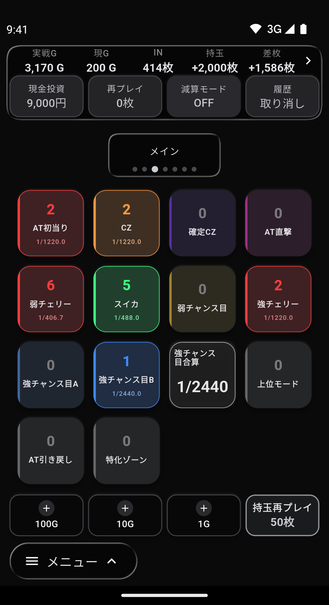
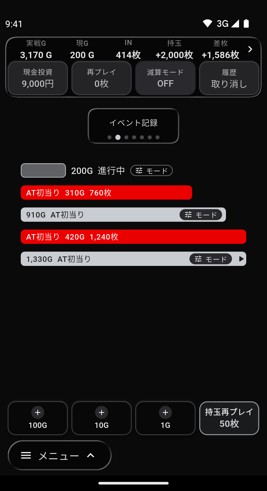
数える準備は
もう済んでいる
機種を選ぶだけ。数える項目も設定差の表も計算ボタンも、そろった状態で届きます。
パチカスタ製レイアウトは有料（1本100円）。価格と特典を見る
2026年10月30日時点
最新の機種
- スマスロ モンスターハンターライズ：サンブレイク
- スマスロ 獣王
- L転生王女と天才令嬢の魔法革命
- スマスロ パリピ孔明
- L青春ブタ野郎はバニーガール先輩の夢を見ない
- Lパチスロ 彼女、お借りします
- パチスロ見える子ちゃん
- モグモグ風林火山 大海戦の巻
- スマスロ リコリス・リコイル
- Lパチスロ 喰霊-零-Re
ほか、続々追加中
打ち始めてからも、こんなこと、ありませんか
攻略サイトとアプリを何度も往復して切り替えが手間…機種の説明も、設定差の表も、演出の情報も！すべてアプリの中で見れちゃいます。

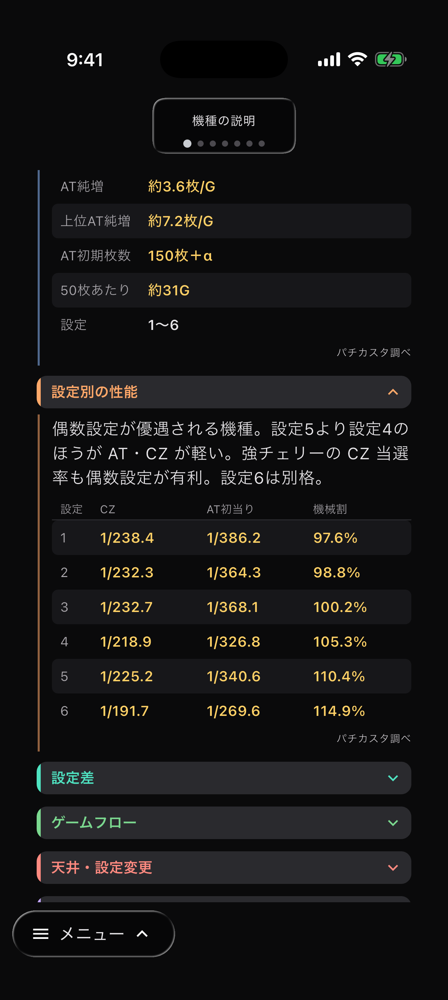
動画に集中したいのにカウンターに戻らないといけないのが煩わしい…YouTube を横動画で見ながらカウントできます
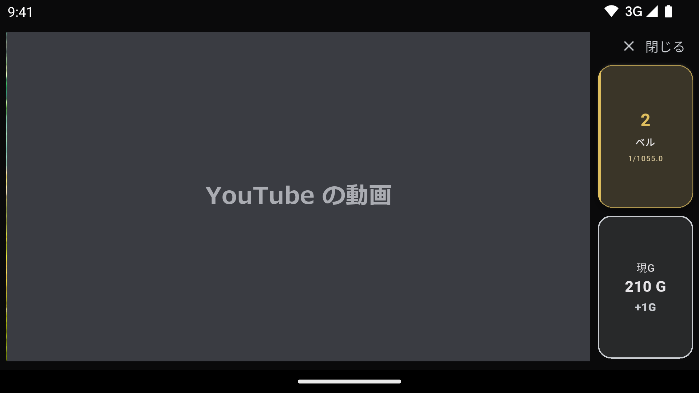
動画：Tears of Steel (CC) Blender Foundation | mango.blender.org｜CC BY 3.0｜切り抜いて使用
あれ？今カウントしたっけ？
不安だ…アクションとバイブでカウントをお知らせ。履歴から押したボタンの時刻を確認できるので押し間違い、押し忘れの不安を解消します。
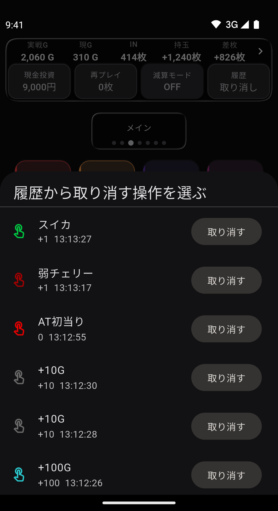
メモは残したのに、帰ってから集計するのが面倒で、そのまま埋もれていく…数えた記録が実戦ごとにそのまま残り、機種別の集計結果として見返すことができます。
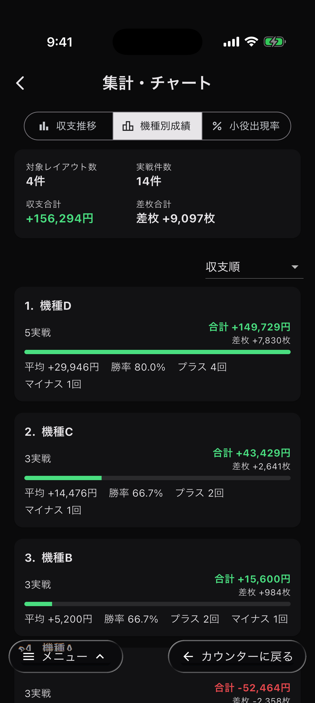
この日の収支の実戦内容はどんなのだったっけ…？収支カレンダーをタップすると、その日の実戦の内容（カウント・区間・演出）までたどれます。
収支カレンダーで日をタップ
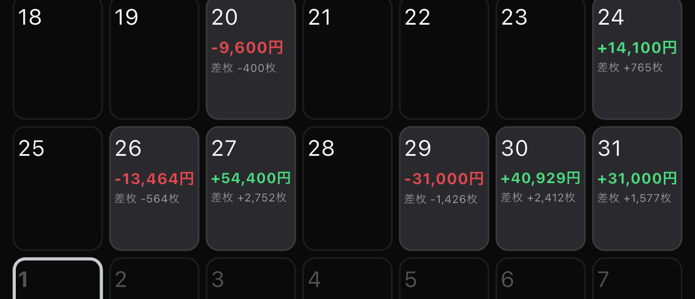
その日の実戦一覧
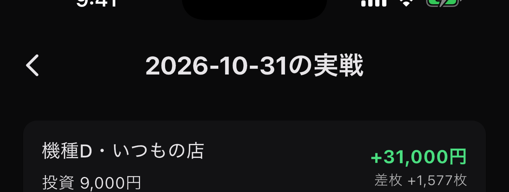
個別の実戦の回数と確率
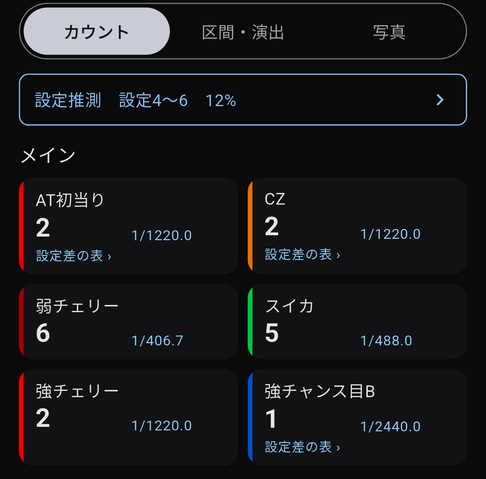
換金後に投資を引いて収支を数えてる。マイホの交換率と貸出枚数を登録することで、実戦中に収支を自動計算してくれます。
店を選ぶ
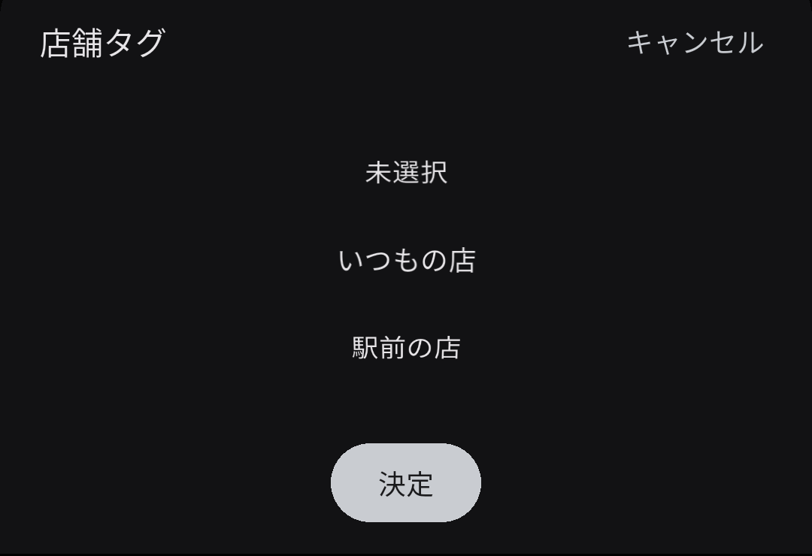
交換率と貸出枚数が入る
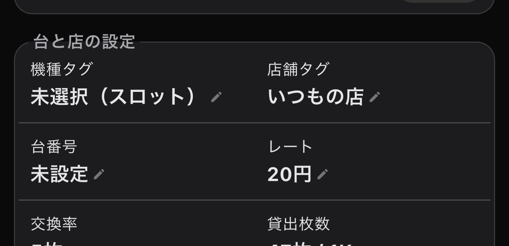
実戦中の収支
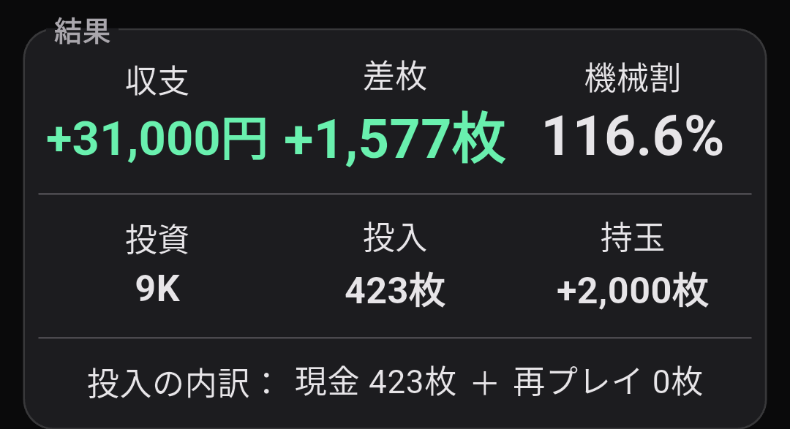
見たい数字が、どのカウンターにも無い…結局、電卓…計算式に好きなボタンを割り当てることで自分だけの計算を作れます。
計算を組む（BIG+REG ÷ 総G）
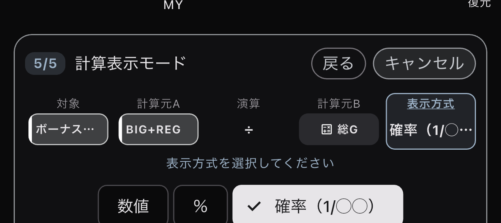
結果がカウンターに出る
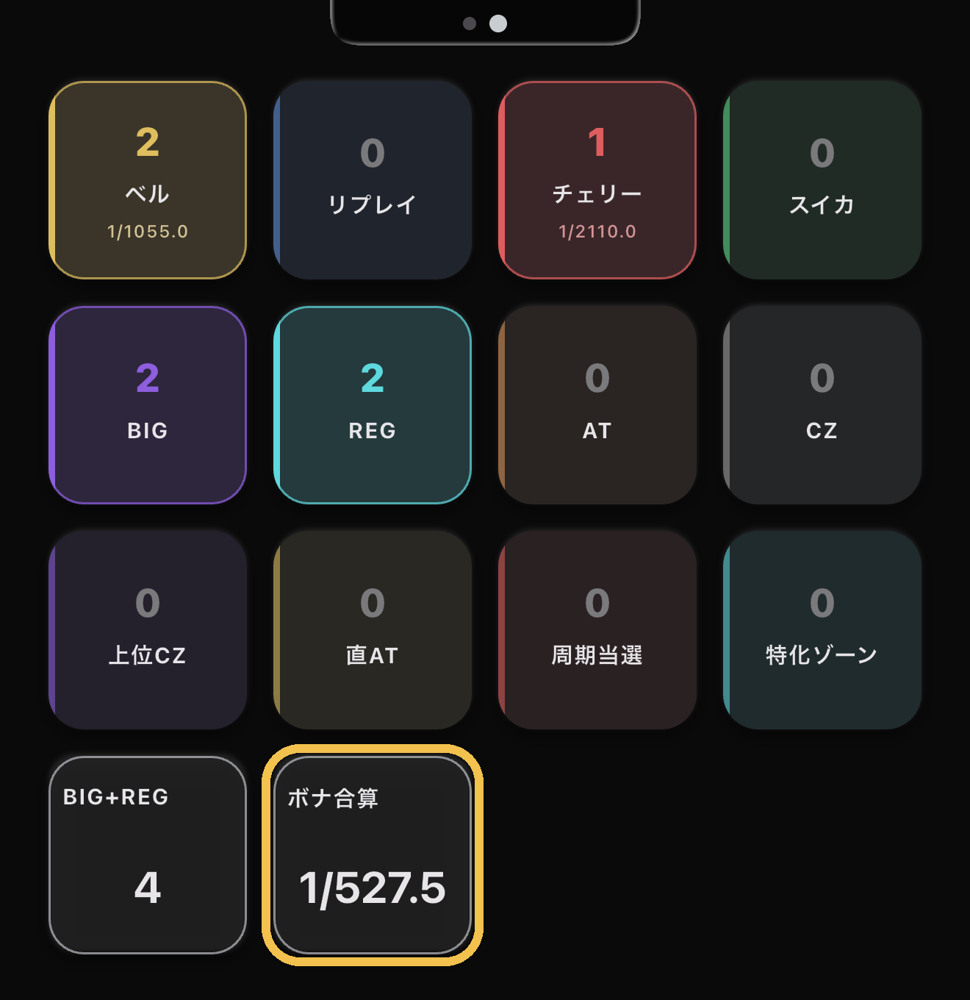
リリース記念価格
パチカスタ製レイアウト
1本¥100
買ったレイアウトは、価格が変わってもずっと使えます。
新台も順次追加し、買ったあとも更新が届きます。
はじめての方への特典
購入権を5本好きな機種のレイアウト5本と交換できます
30日間、無料「モード・状態カスタマイズ」と「演出記録ページ（4・5ページ目）」
お一人様1回。無料期間が終わっても、自動で課金されることはありません。
数えるだけじゃない。
いつ、何の演出を引いたかまで残せるカウンター。
よくある質問
- パチカスタはどんなアプリですか？
- パチスロの実戦で、小役や演出の回数を数えて記録するカウンターアプリです。数えた回数から確率（1/◯◯）をその場で出し、設定差の表と並べて見られます。何G目・どの区間で何が起きたかも残ります。
- 無料で使えますか？
- アプリは無料でダウンロードして使えます。機種ごとの数える項目と設定差の表がそろった「パチカスタ製レイアウト」は1本100円（リリース記念価格）のアプリ内課金です。アプリ内に広告があり、広告を消す買い切りもあります。
- どの機種に対応していますか？
- パチカスタ製レイアウトは、いまパチスロ 84機種（2026年10月30日時点）です。新台も順次追加し、買ったあとも更新が届きます。数えるボタンを自分で組めば、どの機種でも使えます。
- iPhone と Android のどちらで使えますか？
- どちらでも使えます。App Store と Google Play からダウンロードできます。
- 実戦のデータはどこに保存されますか？
- 数えた回数や記録は、原則としてお使いの端末の中に保存されます。アカウントの登録はありません。くわしくはプライバシーポリシーをご覧ください。